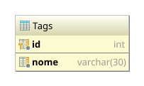

Esta é uma revisão para a segunda prova.
Na aplicação de MiniBlog, o que você faria para que a lista de posts fosse exibido na ordem, sendo que os mais recentes apareçam primeiro e os mais antigos no final?
Desenvolva a solução que você optou.
Desenvolva a funcionalidade de modificar os posts do MiniBlog, que atenda aos seguintes requisitos:
Nessa questão, você deverá alterar o esquema da tabela Posts, adicionando uma segunda coluna
DATETIME para saber o momento da modificação. Use a instrução abaixo na tabela já criada:
Assim, em resumo, para atingir os objetivos da questão, você precisará:
Post.PostDao para utilizar o novo campo.
OBS:
lembre-se que a coluna modificado é NULL, portanto, para saber se o post
foi modificado no Java, basta fazer a comparação modificado != null.
Adicione à aplicação MiniBlog o recurso de marcar um post com uma tag.
A funcionalidade de tags deverá funcionar da seguinte forma:
As tags serão mantidas na tabela Tags:
|  | {% highlight sql %}{% include_relative un2/create-tags.sql %}{% endhighlight %} |
E é preciso criar a chave estrangeira na tabela Posts:
{% highlight sql %}ALTER TABLE Posts ADD tag_id INT NULL REFERENCES Tags (id){% endhighlight %}Estou fornecendo também as classes de acesso a dados Tag e TagDao, com os métodos
necessários para a questão.